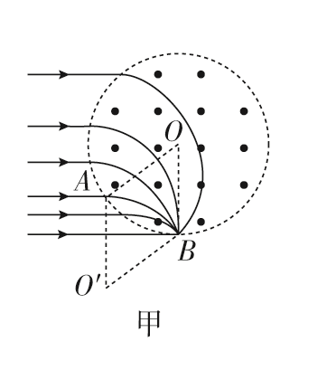
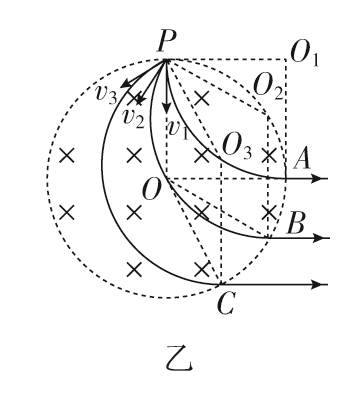

高中物理 · 带电粒子在圆形有界磁场中的会聚与发散模型
当带电粒子在圆形有界磁场中运动，且轨迹圆半径 = 磁场圆半径（$r=R$）时，会出现两种典型的几何对称现象：磁聚焦与磁发散。


| 项目 | 内容 |
|---|---|
| 适用条件 | 大量同种带正电粒子，速度大小相等，水平平行入射到圆形有界磁场区域；磁场方向垂直纸面向外，粒子源位于磁场圆左侧。 |
| 前提条件 | 轨迹圆半径 $r=\dfrac{mv}{qB}$ 等于磁场圆半径 $R$。 |
| 几何结论 | 所有粒子从入射点 $A$ 出发，最终在圆形磁场的最低点 $B$ 会聚射出。 |
| 证明要点 | 四边形 $OAO'B$ 为菱形（$OA=O'B=r=R$，$OO'=AB=R$），故 $OB\parallel AO'$，方向竖直向下，与所有入射方向的弦切角无关。 |
| 项目 | 内容 |
|---|---|
| 适用条件 | 圆形有界磁场（半径 $R$，垂直纸面向里），从磁场圆上最高点 $P$ 有大量同种带正电粒子，速度大小相等、方向不同射入；不计重力。 |
| 前提条件 | 轨迹圆半径 $r=\dfrac{mv}{qB}$ 等于磁场圆半径 $R$。 |
| 几何结论 | 所有粒子射出磁场时，速度方向相同（均沿水平方向）—— 平行射出。 |
| 证明要点 | 每个粒子的运动轨迹圆心 $O_i$ 与磁场圆心 $O$、入射点 $P$、出射点构成菱形，由几何关系 $O_iP\parallel O_i$(出射点)，推出出射速度方向均与 $PO$ 平行（即水平）。 |
磁聚焦与磁发散模型的核心技巧是 菱形构造，关键步骤如下：
| 步骤 | 操作要点 |
|---|---|
| ① 前提 | 先确认轨迹圆半径 = 磁场圆半径（$r=R$）—— 这是所有几何结论成立的前提。 |
| ② 画双圆 | 在同一图中画出磁场圆和粒子的轨迹圆，两圆等大，标注圆心 $O$（磁场圆心）和 $O'$（轨迹圆心）。 |
| ③ 找四边形 | 确定四个关键点：入射点 $P$、出射点、磁场圆心 $O$、轨迹圆心 $O'$。由 $OP=OO'=O'$(出射)$=R$ 得菱形结构。 |
| ④ 定方向 | 利用菱形对边平行的性质：磁场圆心与入射点的连线平行于轨迹圆心与出射点的连线； 由此推出出射速度方向（必垂直于 $O'$(出射)$，即沿 $O$(出射) 切线方向）。 |
| ⑤ 求半径 | 由 $r=\dfrac{mv}{qB}$ 联立已知量求 $B$；反之亦可由 $B$、$v$ 求 $r$，再判断会聚点位置或射出方向。 |
| 对比项 | 磁聚焦（甲） | 磁发散（乙） |
|---|---|---|
| 入射方式 | 从一点 $A$ 平行入射 | 从一点 $P$ 多方向入射 |
| 出射特点 | 从同一点 $B$ 射出（会聚） | 沿同一方向射出（平行） |
| 前提条件 | $r=R$ | $r=R$ |
| 几何核心 | 菱形 $OAO'B$ | 多个菱形 $POO_iA_i$ |
| 典型应用 | 质谱仪、速度选择器 | 束流整形、平行粒子束生成 |
| 磁场方向 | 由纸面向外（正电荷向上偏转） | 由纸面向里（正电荷向内偏转） |
选择模式，观察带电粒子在 圆形磁场（蓝圆，半径 $R$）中的运动。所有轨迹圆半径均取 $r=R$。